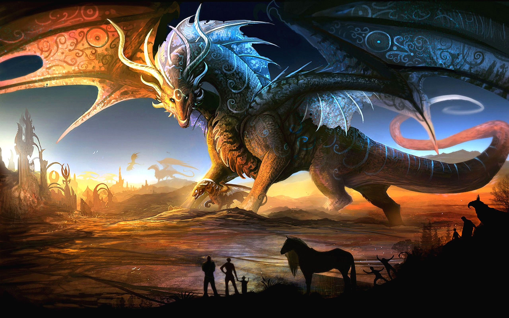
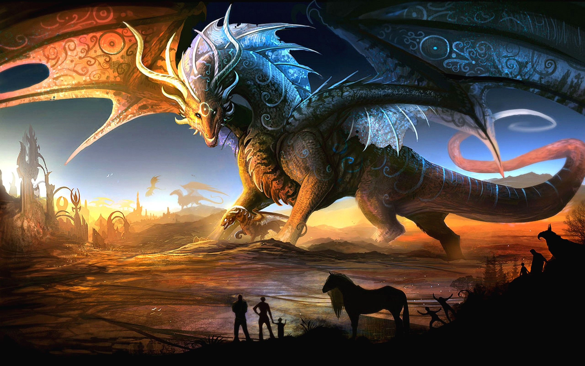

Student Bio
Seth Munoz

My name is Seth Munoz. I was born in Santa Fe, New Mexico, and through a series of interesting events I now live in Collingswood, New jersey. I am married and I have two children who amaze and inspire me on a daily basis. My first career was as a teacher. I have taught at the same school for 18 years. But at this point in my life I am looking for a new experience. Computers have always held a fascination for me. I have always pondered their inner workings but never had the impetus to study this until now.
I also have lots of hobbies. I love to draw. For the most part I draw dragons. I also like to draw portraits of people, but I am not as good at that as I am with dragons. One of the best parts of making art is watching my progress as an artist. I also love games. From an early age I was always interested in the way that game rules are structured and how they interact. I love complex strategy games the most. I also enjoy roleplaying games. My favorite is a game called Imperial Assault, which is based on Star Wars. The game that I play the most is Dungeons and Dragons. I have been playing this game for twenty years, through many of its various editions. I am often tagged for the role of Dungeon Master; probably because of my experience and outgoing personality.

 
